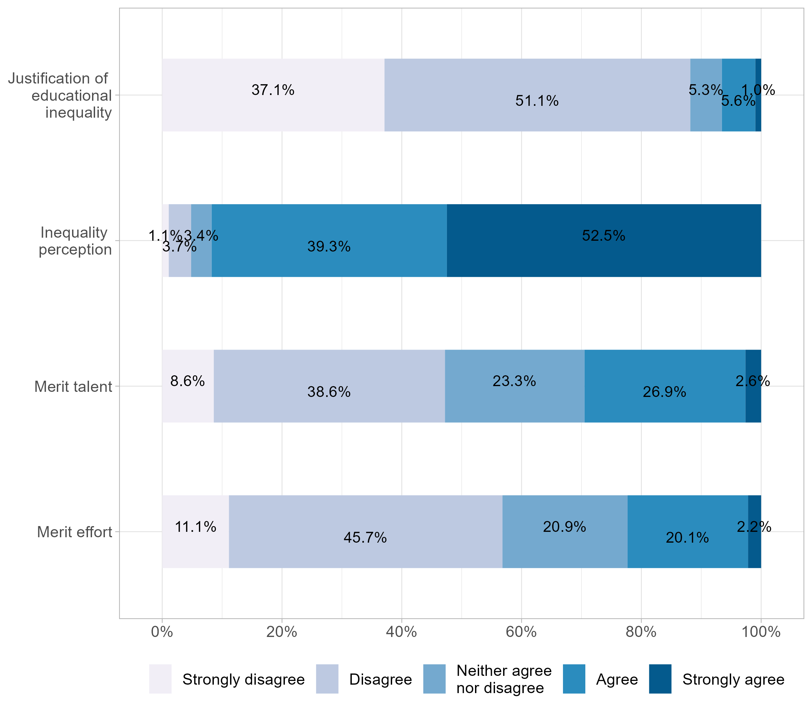
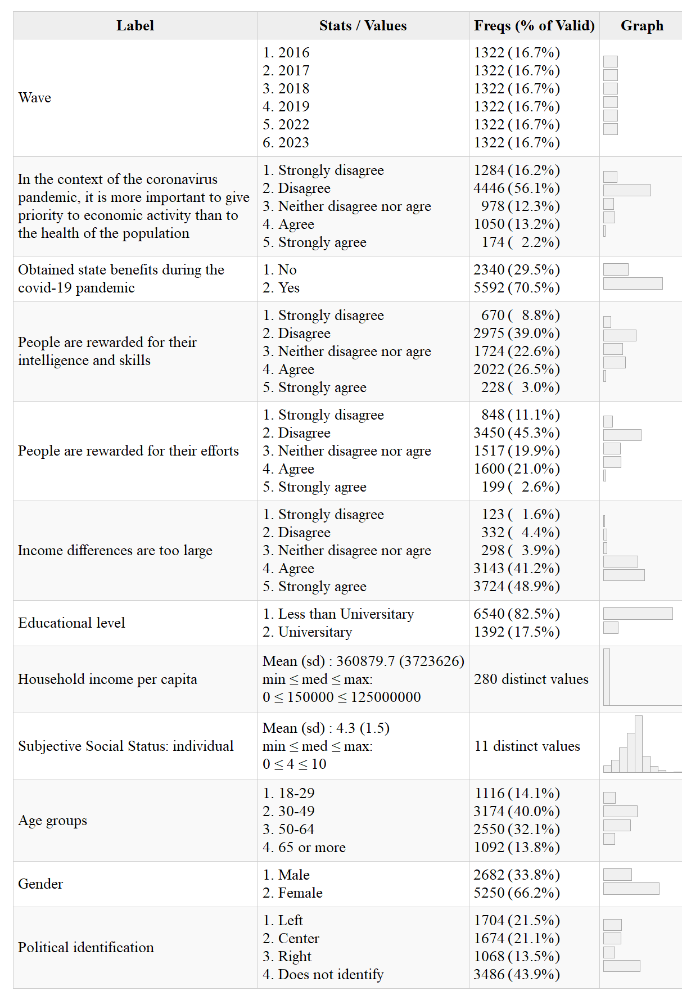
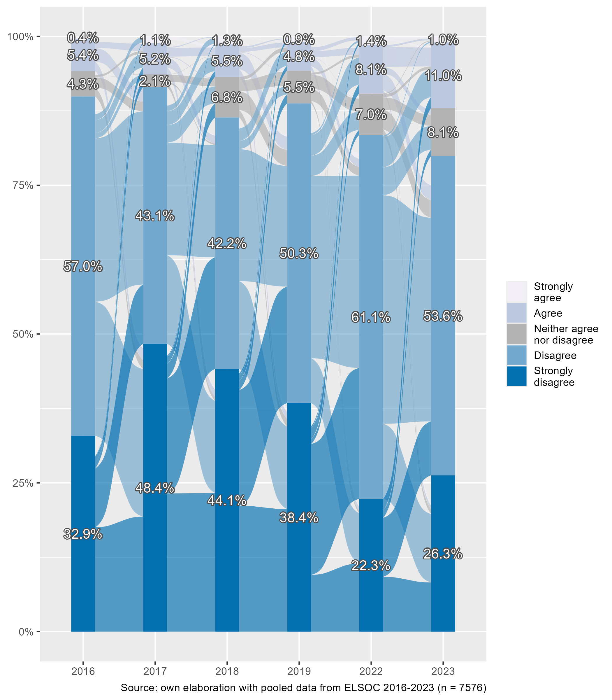
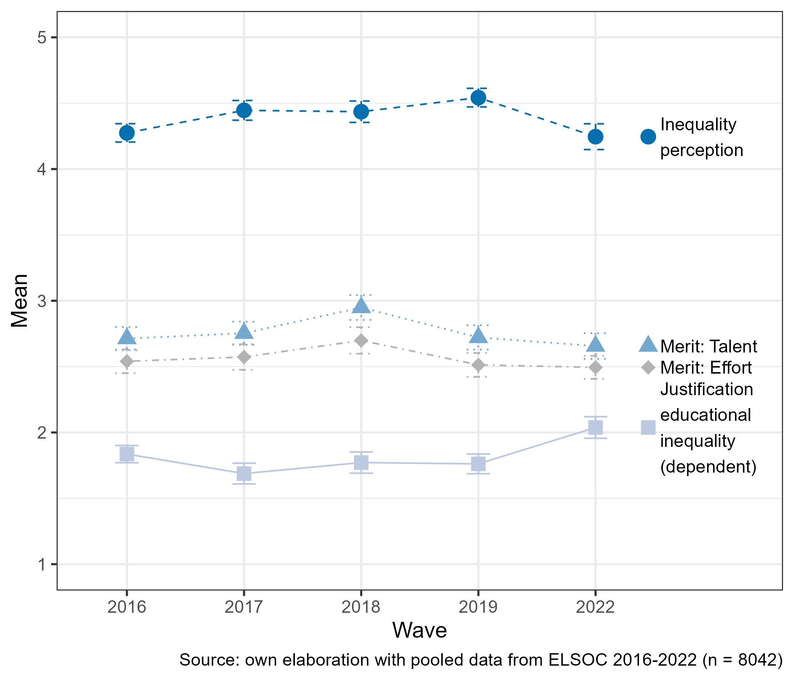
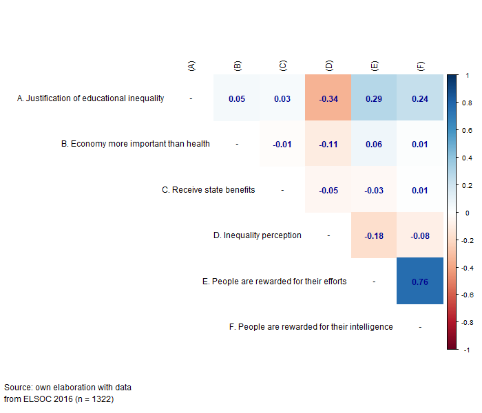
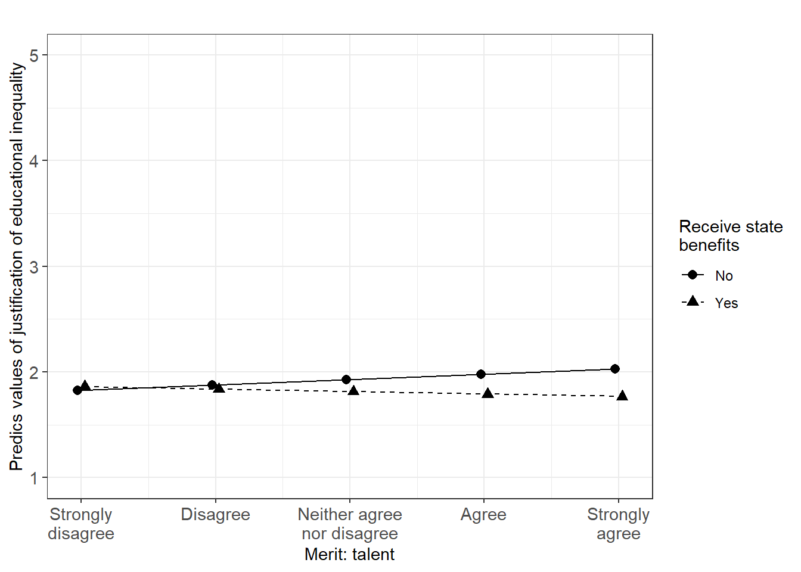

![]()

Changes in the justification of educational inequalities. The role of perceptions of inequality and meritocracy during the COVID pandemic.
Abstract
Education is considered a key tool for social mobility and equality of opportunities. However, despite the widespread value of education, disparities in educational outcomes persist over time. To what extent are such educational disparities justified in society? And, what are the main factors driving this kind of justification? This research focuses on the changes in the justification of inequality in access to education in Chile and their links with the perception of meritocracy. The Chilean case offers an interesting context for this study given its high economic inequality, deep neoliberal policies, and commodification of social services such as education. The central argument of this article is that the justification of inequalities weakens during periods of vulnerability and crisis (such as the health and economic crisis resulting from the COVID-19 pandemic), which could be linked to a challenge of meritocratic ideals. For testing the research hypotheses we estimate a series of longitudinal multilevel models with data from a Chilean longitudinal panel survey (2016 – 2022, 6 waves, N = 2,927). Whereas we find support for the association between the perception of meritocracy and justification of inequality, the analyses that involved changes over time showed an increase in the justification of inequality in education. The discussion of these results delves into the social consequences of justifying inequality in a sensitive area as education, as well as the persistence of meritocratic ideals despite challenging events.
Keywords: meritocracy, social inequality, inequality justification, COVID-19
This document was last modified at 2025-01-14 14:37:05
and it was last rendered at 2025-01-14 14:37:05
1 Introduction
Despite the widespread recognition of education as a key factor for social mobility and equality of opportunities, disparities in this domain are far from being eliminated. As the last PISA Report points out, “Socio-economically disadvantaged students are seven times more likely than advantaged students to score below Level 2 in mathematics on average across OECD countries” (OECD 2023). Furthermore, empirical evidence from social science research has revealed an exacerbation of educational inequalities across various domains, such as family socioeconomic status, gender, ethnicity, and migratory background, particularly after COVID-19 (Darmody, Smyth, and Russell 2021). Nevertheless, and despite the consistent empirical evidence on educational inequalities and their consequences, research on distributive justice indicates remarkable individual differences in the justification of unequal access to education (Lee and Stacey 2023). In the present paper, we argue that the perception of meritocracy in society might play a role in the justification of economic inequalities in this particular domain. We examine this association in the context of COVID 19 in Chile, a period characterized by several challenges regarding the political and economic system that could have affected the way in which the role of individual performance and social outcomes are deemed.
Meritocracy is defined as a distributive system where individual factors such as effort and talent are conceived as the main determinants of individual performance, usually sidelining the role of opportunities and social background. In recent years, there has been a growing interest in studying meritocratic beliefs as well as their variations according to individual and contextual variables (Mijs 2021; Mijs et al. 2022). This line of research has highlighted how meritocratic beliefs are associated with justifying unequal access to resources and rewards in society, by legitimizing social hierarchies in which those who already have resources and advantages are more likely to succeed (Sandel 2020; McNamee and Miller 2004; Hadjar 2008). Within this framework, this study focuses on the changes in the justification of inequalities in access to education in Chile during the COVID pandemic, and to what extent this phenomenon is associated with the perception of meritocracy and its variations.
The Chilean case is particularly relevant when it comes to the study of inequalities in education. The country is characterized by a high level of economic inequality associated with the privatization and commodification of several social policy domains, among them the educational system (Bellei 2013; Corvalán, Carrasco, and García-Huidobro 2016). The neoliberal reforms implemented during and since the military dictatorship (1973-1989) have deepened educational policies based on private subsidies, achievement incentives, selection, and segregation (Joiko 2019). Previous research in Chile has emphasized the concept of an “educational market” (Corvalán, Carrasco, and García-Huidobro 2016), characterized by selection, competition, and the provision of goods and services associated with payment capacities. Many studies have addressed this problem from economic, political, and sociological perspectives, generating relevant evidence on their academic and social consequences (Ramos 2022). Likewise, massive social mobilizations in the country (particularly in 2006, 2011, and 2018) have had educational inequalities as one of the main targets, putting pressure on governments towards a series of reforms that have advanced free higher education reforms and have diminished the role of private actors in the educational system (Donoso 2016; Reyes-Housholder and Roque 2019).
This research endeavors to dissect the nuanced alterations in the justifications for educational disparities within the Chilean framework. Central to our investigation is the premise that the rationale underpinning these inequalities experiences a significant recalibration during periods of vulnerability and crises, specifically under the unprecedented strains of the global health and economic cataclysm triggered by the COVID-19 pandemic (Hankivsky, Morrow, and Varcoe 2022; Breznau 2021). A pertinent aspect of this discourse is articulated in the works of Mijs (2016, 2018), showing the interplay between meritocratic beliefs and the legitimization of disparities, as well as the potential erosion of meritocratic principles amidst crises. Within this framework, we point out that periods of vulnerability (such as the health and economic crisis resulting from the COVID-19 pandemic) could weaken the justification of social inequalities, a change that would be at least in part linked to a challenge of the meritocratic ideals. Furthermore, we suggest that the association between meritocratic perception and inequality justification would be weaker among lower-status groups, as they would be the most affected in critical times.
Against this backdrop, Chile serves as an example among Latin American countries due to its strong sanitary measures. These measures significantly impacted the labor market, leading to important consequences for unemployment and income distribution. It is importantto approach any claims about the influence of the COVID-19 pandemic with caution. Our findings are situated within a broader context of increasing socioeconomic risks and vulnerabilities, which were heightened by the sanitary restrictions implemented during the pandemic.
2 The justification of educational inequalities
The justification of economic inequalities is a controversial field of study. As equality is usually considered a synonym of justice in common sense, the idea that someone could be willing to justify inequalities seems (in principle) far from what is considerably reasonable. Nevertheless, and as pointed out by Barry, the whole normative discussion in social justice can be conceived as “the defensibility of unequal relations between people” (1989, 3), whereby empirical research has consistently shown strong variations between individuals and societies regarding inequality justification (Trump 2018; Kelley and Evans 2021; Mijs 2021). Both theoretical and empirical approaches have been able to establish a clear distinction between inequality and justice, opening the question of to what extent inequality can be tolerated or even justified.
Studies addressing inequality justification have assessed the support for market ideologies, salary gaps, and distributive preferences. A strand of this research has focused on specific policy areas such as health, pensions, and education, attending to the degree of justification of market-based access to social services. For instance, Lindh (2015) found that public support for the market distribution of social services is generally low in most countries, implying that most people believe it is unfair for market forces to determine access to basic social services. Similarly, Busemeyer and Iversen (2020) shows that high-income citizens are less supportive of expanding public spending on universal benefit schemes. Instead, they tend to prefer a public basic insurance scheme, even if it provides relatively more benefits to low-income individuals.
In the area of empirical studies, the operationalization of educational inequality justification in terms of questionnaire items has been diverse, and there is not a single instrument or scale dedicated specifically to this concept. Rather, some attitudinal surveys usually include education-related items that are posteriorly used as dependent or independent variables. Some examples are the International Social Survey Programme (ISSP) (Is it just or unjust – right or wrong – that people with higher incomes can buy better education for their children than people with lower incomes?), and the European Social Survey (ESS) 2018 (Compared to other people in [country], I have had a fair chance of achieving the level of education I was seeking). Although both questions have been used to measure the justification of educational inequality, they refer to different aspects: the ESS can be classified as reflexive, as the respondent is involved as a referent for the question, whereas the ISSP question is non-reflexive. Furthermore, ISSP refers to educational access, while the ESS refers to educational outputs.
Meritocracy and educational inequalities
The relationship between performance and outputs brings about to the concepts of merit and meritocracy, key in educational justice research. The concept of meritocracy, coined by the sociologist Michael Young in his satirical work “The Rise of the Meritocracy” (1962), has a rich history and multifaceted meaning. Young’s term was initially used to critique a hypothetical future society where social and economic positions were entirely determined by individuals’ merits, talents, and efforts, ostensibly eliminating the influence of inherited privilege. However, over time, the term has evolved to describe a social system where advancement and success are perceived as directly linked to one’s abilities and achievements, sidelining inequalities of opportunities (Bell 2020). This would contribute to the justification of inequality in the educational domain (Sandel 2020), as individual ability is often inherited, and educational attainment is influenced by family background (Goldin 2000).
Although there are few studies relating meritocratic beliefs and inequality justification, from a broader perspective it is possible to find related research which incorporates the support of different distributive principles with regard to education. For instance, in an experiment by Igliozzi, Granot, and Ottati (2024), they establish how the support for different justice principles (equity, equality, and need) is related to support for redistributive policies in domains such as education. They find that a larger system justification (Jost and Hunyady 2003) is related to higher support for the principles of equity and equality (over need) in distributing educational outcomes, where equity was measured in terms of access to education related to performance (‘Students who place within the highest 50% of testing scores from the previous year can attend the magnet school’). In the same line, Lee and Stacey (2023) show that performance assessments (in what they call “neoliberal orientations”) predicted people’s fair perceptions of educational inequality.
Empirical cross-sectional evidence from Chile reveals two significant trends: low public support for the perception of meritocracy and limited justification for unequal access to social services such as education and health. However, the relationship between meritocracy and the justification of inequality within the educational domain remains underexplored. For instance, (castillo_clivajes_2013?) analyzed data from the International Social Survey Programme (ISSP) in 1999 and 2009, highlighting consistently low support for inequality based on resource allocation or individual merit. Similarly, (Castilloetal2019?) demonstrated widespread skepticism among Chileans regarding the meritocratic system, with many disagreeing with the notion that rewards are fairly distributed based on talent and effort.
More specific empirical research examining the relationship between meritocratic perceptions and the justification of educational inequality provides valuable insights into the dynamics shaping individuals’ attitudes and beliefs. Some studies have explored the extent to which people believe that educational systems are meritocratic and how these perceptions influence their acceptance or rejection of educational disparities, as well as status differences (McCoy and Major 2007). This belief is particularly influential in educational institutions, where it not only encourages academic success but also legitimizes social and income inequality (Batruch et al. 2023). Most of the evidence so far suggests that those who believe in a direct link between effort, talent, and educational success are more inclined to rationalize existing disparities in educational outcomes. However, empirical findings also reveal nuances in this relationship. For instance, studies show that when individuals perceive structural barriers, such as economic disparities or discrimination, as hindering the meritocratic ideal, they may be less likely to justify educational inequalities (Day and Norton 2023). This suggests that while meritocratic beliefs play a significant role, individuals’ awareness of broader societal issues can mediate their willingness to rationalize educational disparities.
This study
The present research aims at identifying changes in the justification of educational inequalities in Chile, with a particular focus in its relationship with meritocratic perceptions. The time frame for this analysis covers between 2016 and 2023, by using longitudinal panel survey data provided by the ELSOC database (Estudio Longitudinal Social de Chile). Although this period comprises the COVID pandemic, the changes in the variables analyzed are not possible to be attributed only to this event in terms of a health crisis, as several economic, social and cultural processes overlapped worldwide. Besides, in the specific case of Chile there were two constitutional processes happening in this very same period after a massive social upheaval.
As there are measures before and after the pandemic period, firstly we explore to what extent it is possible to identify variations in inequality justification within this time frame. Although we are aware that it is not possible to make a causal claim given that this period is characterized by many other circumstances besides COVID, we argue that the increase of risk perceptions in critical situations (such as the pandemic) impacts public concerns about equality and redistribution (Breznau 2021).
Within this framework, we point out that periods of rising socioeconomic and health vulnerabilities could weaken the justification of social inequalities. This change would be at least in part linked to a challenge of the meritocratic ideals. Chile provides a significant case for studying inequality, as it exemplifies a prosperous yet highly unequal society within Latin America. Under such conditions, a shock like the COVID-19 pandemic posed a considerable threat to economically vulnerable groups and those in precarious labor market positions. Chile implemented sanitary controls early in the pandemic, initiating lockdowns on March 18, 2020, and lifting all restrictions by March 5, 2023. In this context, Chile stands out as one of the strictest countries globally and within South America in terms of pandemic-related policies. According to the Stringency Index (Hale et al. 2021)—ranging from 0 to 100 (100 being the strictest) and encompassing measures like school closures, workplace shutdowns, and travel bans—the global median was 42.54, while Chile scored 58.1. This placed Chile 36th among 184 countries and 4th in South America, following Peru (60.1), Suriname (60.5), and Venezuela (80.5).
Within the period analyzed (2016-2022), an important cycle of protests known as the “social outburst” took place between October 2019 and March 2020 (Somma et al. 2021). However, the protest drastically decreased as a result of the lockdown (Joignant et al. 2020). In terms of public views on economic inequality, it has been documented that critical views toward inequality increased in 2019 and deepened under the pandemic (coes_radiograficambio_2023?), which we argue can be in part explained by the increased risk exposure and vulnerability in the context of the COVID-19 pandemic. Hereby, a relevant aspect is the transformation of the labor market and its impact on income distribution (ministerio_de_desarrollo_social_y_familia_resultados_2022?; instituto_nacional_de_estadisticas_resultados_2022?,). In 2015, the poverty rate was 11.2%, decreasing to 8.5% by 2017, with the 10/10 ratio at 31.6. In 2020, during the COVID-19 pandemic, poverty increased to 10.7%, and the 10/10 ratio surged to 301.7, while unemployment reached 10.5%, the highest level in a decade. By 2022, poverty declined to 6.5%, the 10/10 ratio improved to 61.2, and unemployment decreased to 7.9%, rising slightly to 8.7% in 2023.
Although the pandemic might have triggered such concerns mostly regarding health, we believe that other policy areas, such as education, could have been affected in this period. Consistently, our first hypothesis is:
H_1: The justification of educational inequalities decreases after the pandemic
Our second argument is based on the evidence that relates rational interests with justifications and preferences (Son Hing et al. 2019). Research about the justification of educational inequality usually focuses on differences between status groups, based on the rational premise that those who are worst-off would tend to show lower levels of justification (Stoilova and Ilieva-Trichkova 2023). For instance, Valant and Newark (2016) find that Americans are more concerned about—and more supportive of proposals to close—wealth-based achievement gaps than Black-White or Hispanic-White gaps. However, most of the research in this area goes beyond status differences, focusing on how subjective factors such as perceptions and beliefs are related to different levels of justification. In line with this evidence, we expect that:
H_2: Those with lower status characteristics show lower justification of educational inequalities
Thirdly, we address inequality perception. As pointed out by Janmaat (2013), justifications are usually confused under the labels of “beliefs” and “attitudes,” and their distinction from perceptions is relevant as it helps state that justifying a certain level of inequality requires taking into account which level of (perceived) inequality is first and foremost being recognized (Son Hing et al. 2011; Castillo et al. 2023). For instance, a recent study by Day and Norton (2023) on the perception and justification of inequality in university endowments in the U.S. points out that individuals tend to underestimate the magnitude of existing inequality while simultaneously desiring greater equality. Furthermore, through an experiment, they demonstrate that information about inequality in university endowments (i.e., manipulating inequality perception) increases the perception of injustice in education. Results of this study are in line with the consistent evidence on biases related to the underestimation of economic inequality (Castillo, García-Castro, and Venegas 2022; Gimpelson and Treisman 2018). As a larger inequality in this domain threatens a basic equality ideal, the corresponding hypothesis in this case is:
H_3: A larger inequality perception is negatively associated with the justification of educational inequalities.
Our fourth hypothesis refers to the central concept of meritocracy. As meritocracy justifies inequalities based on performance, we expect that:
H_4: Higher meritocratic perceptions are positively related to the justification of educational inequalities.
Finally, and in line with hypotheses 1 and 4, we explore interactions between meritocracy and inequality justification over time. As COVID-19 pandemic has affected the structural opportunities to attend schools, universities, or workplaces, the ideal of meritocracy might have been challenged in the time frame analyzed. As a consequence, the justification of inequality could show a decrease over time:
H_5: The positive association between meritocracy and inequality justification mitigates along time
3 Data, variables & methods
3.1 Data
The main data source is the Chilean Longitudinal Social Survey 2016–2023. The ELSOC has been designed as a yearly panel study to evaluate how individuals think, feel, and behave regarding a set of social issues concerning conflict and social cohesion in Chile. The sampling design is probabilistic, stratified, clustered, and multistage. It provides adequate coverage of the country’s largest cities (Metropolitan Area of Santiago, Valparaíso, and Concepción) and smaller cities. Consequently, the ELSOC comprises a total of 2,927 participants aged between 18 and 75 years in wave 1. In addition, the sample represents 77% of the total national population and 93% of the urban areas (ELSOC 2022).
The survey has been conducted yearly since 2016, except for the year 2020, when it was suspended due to the pandemic. The waves 2016, 2017, 2018, 2019, 2022, and 2023 were administered using computer-assisted personal interviewing (CAPI). However, a reduced version was conducted using computer-assisted telephone interviews (CATI) in 2021. In addition, wave 3 included a refreshment sample to counter survey attrition. The same sampling strategy as that of wave 1 was implemented for selecting new cases. As a result, the total sample of wave 3 included 3,748 cases, of which 2,229 were part of the original sample and 1,519 were from the refreshment sample. The data from the refreshment sample is not included in the analytical sample because we wanted to analyze longer response trends. Regarding the original sample, the response rate was 62.4% in wave 1, achieving N = 2,927 participants. In broader terms, the accumulated attrition between wave 1 and wave 7 is 40%, achieving a final sample of N = 1741. The analysis used longitudinal weights to avoid bias due to the sampling design, allowing us to control for biases arising from systematic patterns of non-participation in the survey after the first wave. For a more detailed analysis of responses, attrition, and the construction of longitudinal weights, visit https://coes.cl/encuesta-panel/. The dataset is publicly available at: https://dataverse.harvard.edu/dataverse/elsoc.
3.2 Variables
The dependent variable of this study is the justification of educational inequality. This construct is measured using the following statement: “It is just that high-income people have a better education for their children than people with lower incomes” (“Es justo que las personas de altos ingresos tengan una mejor educación para sus hijos que las personas con ingresos más bajos” in Spanish). Here, the respondents declared their preferences on a Likert scale from (1) “strongly disagree” to (5) “strongly agree” (5). The main independent variables refer to meritocratic perception, which is operationalized by two items, one related to effort (“In Chile, people are rewarded for their efforts”), and the other related to talent (“In Chile, people are rewarded for their intelligence and skills”). In addition, we included an indicator for economic inequality perception (“In Chile, the income differences are too large”). Figure 1 shows the average distribution throughout the years for these variables. We observe that there is a large group (88.2%) of respondents who disagree or strongly disagree that people with higher incomes can access better education. Likewise, a large group of respondents (91.7%) agree or strongly agree that income differences in Chile are too large. On the other hand, there is an important level of disagreement (disagree + strongly disagree) about the perception of meritocracy, this is, whether people are rewarded for their talent (47.6%) and for their efforts (57%).
A third group of variables is included in the analysis to assess the effect of elements related to the pandemic context. These variables were only included in the 2021 wave, so each individual’s responses were replicated for the remaining years. The first variable addresses the belief regarding whether, in the context of the pandemic, it is more important to give priority to economic activity than to the health of the population, measured on a Likert scale from (1) “strongly disagree” to (2) “strongly agree”. The second variable is a dummy (No/Yes) that captures whether individuals received state benefits during the pandemic (e.g., Food Box, Emergency Family Income, Contribution for the Middle Class, or others).
For testing the hypothesis regarding status we included educational level and household income. Also, we included subjective social status as it has been argued that perceived social status is a relevant predictor of attitudes toward economic inequality (Schneider and Castillo 2015; Castillo et al. 2019). In addition, subjective measures can complement objective measures in predicting life chances (Oesch and Vigna 2023), which are arguably connected to how individuals experience economic inequality. In this regard, it has been argued that how people form their views on their standing in society results from experiences with direct socioeconomic circumstances and social comparison processes with reference groups (Condon and Wichowsky 2020). Finally, political identification on a left-right scale, age groups, and gender were included as control variables. Table 1 shows the whole set of independent variables, the corresponding items, response categories, and frequencies.
|  |
3.3 Methods
Given the hierarchical structure of the data (observations nested in survey waves), we estimated a series of longitudinal multilevel models (Singer and Willett 2009). Such an approach is suited to account for the shared variance among units (in this case individuals), adjusting the estimation of the standard errors. The linear multilevel models are estimated using the R library “lme4” (Singer and Willett 2009, 4).
4 Results

Figure 2 illustrates yearly frequencies in the justification of educational inequality between 2016 and 2023. Each year represents stacked percentual frequencies, and the flows in between reflect the within-subject change of opinions from one year to the next, as we are using longitudinal panel data (Rosvall and Bergstrom 2010). For instance, of the 32.9% who strongly disagreed with inequality justification in 2016, about half of them kept responding the same in 2017, whereas the other half shifted their opinion to other response categories. In general, the large majority - between 80 and 90% - disagrees with the justification of educational inequality throughout the years. Despite this overall tendency, we also observe that the disagreement with inequality justification (disagree + strongly disagree) tends to go down in the last waves. This change is mostly a result of the increase in the “agree” category, which doubles compared to previous years (from 5.4% in 2016 to 11% in 2023).

Figure 3 shows the average changes in the main variables considered for this study. Here we observe that the justification of educational inequality has the lowest average throughout the years when compared with the other (independent) variables, whereas the highest average is consistently represented by inequality perception. Interestingly, in the last waves of the study (2022-2023) the justification of inequality increases whereas the perception of inequality decreases. As the merit variables are concerned, they show a very similar pattern in terms of averages and changes over the years, being the perception of meritocracy related to effort always lower than the one associated with talent.

Figure 4 presents a correlation matrix of the main variables analyzed, using data from all survey waves. In this matrix, the correlations vary between low and moderate values. Justification of education inequality depicts a moderate and negative association with the perception of inequality (r=-0.3, p<.01) and a moderate and positive association with both meritocracy perception variables (r=0.19, p<.01; r=0.16, p<.01). Regarding the perception of inequality, it presents a moderate and negative association with both meritocracy perception variables (r=-0.16, p<.01; r=-0.11, p<.01). Finally, the two meritocracy variables present a high and positive association with each other (r=0.75, p<.01).
4.1 Multivariate analysis
Table 2 shows the multilevel estimation results for the justification of educational inequality. Model 1 includes the survey waves to estimate intertemporal changes in the dependent variable. Taking 2016 as a reference point, we can observe a staggered decrease in 2017 (\beta=-0.167, p<.001), 2018 (\beta=-0.059, p<.05), and 2019 (\beta=-0.03, p>.05). Nevertheless, in the last waves of 2022 and 2023 there is a radical increase in level of justification of educational inequality (\beta=0.204, p<.001 and \beta=0.233, p<.001), suggesting a non-linear change in this variable. Attempting to model this path of change over time, Model 2 incorporates time (survey waves) as a continuous variable as well as its quadratic term, representing the nonlinear association initially observed in Model 1. On the one hand, the survey wave depicts a negative association, expressing an average decrease in inequality justification over time, but on the other hand, the quadratic wave term is positive, indicating the reversion of this path in the last measurements point.
Model 3 adds the socioeconomic variables to test hypothesis 2. Educational level and household per capita income were added, but none of them had a significant effect. However, in the next models, controlling for all variables, household per capita income had a positive significant effect (\beta=0.001, p<.05). In addition, from this model onwards the demographic control variables were added, where being right-wing (compared to being left-wing) had a positive and significant effect (\beta=0.27, p<.001), and being women (compared to men) had a negative and significant effect (\beta=-0.08, p<.001). Subjective social status and age had no significant effect when controlling for all the variables analysed. The full models can be seen in the appendix (see Table 4).
Models 4 and 5 add the two variables about the Covid context, where we can see that those who believe that in this context the economy is more important than the health of the population justify more inequality in education, an effect that is maintained when controlling for all the variables in model 8 (\beta=0.038, p<.05). On the other hand, those who received state benefits during the pandemic justify less inequality in education compared to those who did not receive them, an effect that also remains significant when controlling for the rest of the variables in model 8 (\beta=-0.093, p<.01).
Inequality perception is added in Model 6, showing a negative association with the justification of educational inequality as hypothesized, remaining stable when controlling for the rest of the variables. Model 7 and 8 introduce the meritocratic variables: talent (if intelligence and abilities are rewarded in society) and effort (if efforts are rewarded in society). In line with our hypotheses, the perception that talent is rewarded has a positive influence on the justification of educational inequality in Model 7 (\beta=0.044, p<.001). However, when controlling for the perception that effort is rewarded, this effect is no longer significant. In this sense, Model 8 shows that the perception that effort is rewarded in society is not only positively associated with the justification of educational inequality (\beta=0.083, p<.001), but it has a larger weight than the perception of talent.
| Model 1 | Model 2 | Model 3 | Model 4 | Model 5 | Model 6 | Model 7 | Model 8 | |
|---|---|---|---|---|---|---|---|---|
| Intercept | 1.847*** | 1.853*** | 1.824*** | 1.693*** | 1.778*** | 2.395*** | 2.276*** | 2.183*** |
| (0.026) | (0.038) | (0.089) | (0.101) | (0.108) | (0.117) | (0.120) | (0.120) | |
| Wave (Ref.= Wave 2016) | ||||||||
| Wave 2017 | -0.167*** | |||||||
| (0.029) | ||||||||
| Wave 2018 | -0.059* | |||||||
| (0.029) | ||||||||
| Wave 2019 | -0.030 | |||||||
| (0.029) | ||||||||
| Wave 2022 | 0.204*** | |||||||
| (0.030) | ||||||||
| Wave 2023 | 0.233*** | |||||||
| (0.029) | ||||||||
| Wave | -0.073*** | -0.073*** | -0.073*** | -0.073*** | -0.048* | -0.051* | -0.052** | |
| (0.020) | (0.020) | (0.020) | (0.020) | (0.020) | (0.020) | (0.020) | ||
| Wave^2 | 0.016*** | 0.016*** | 0.016*** | 0.016*** | 0.012*** | 0.013*** | 0.013*** | |
| (0.002) | (0.002) | (0.002) | (0.002) | (0.002) | (0.002) | (0.002) | ||
| Universitary (Ref.= Less than universitary) | -0.067 | -0.058 | -0.080 | -0.052 | -0.049 | -0.048 | ||
| (0.047) | (0.047) | (0.048) | (0.047) | (0.046) | (0.046) | |||
| Household income | 0.001 | 0.001* | 0.001 | 0.001* | 0.001* | 0.001* | ||
| (0.000) | (0.000) | (0.000) | (0.000) | (0.000) | (0.000) | |||
| Covid: economy more important than health | 0.053** | 0.053** | 0.045* | 0.042* | 0.038* | |||
| (0.020) | (0.020) | (0.019) | (0.019) | (0.019) | ||||
| Covid: receive state benefits | -0.092* | -0.088* | -0.090* | -0.093* | ||||
| (0.042) | (0.041) | (0.041) | (0.041) | |||||
| Inequality perception | -0.144*** | -0.141*** | -0.134*** | |||||
| (0.012) | (0.012) | (0.012) | ||||||
| Merit: Talent | 0.044*** | -0.005 | ||||||
| (0.010) | (0.012) | |||||||
| Merit: Effort | 0.083*** | |||||||
| (0.013) | ||||||||
| Controls | No | No | Yes | Yes | Yes | Yes | Yes | Yes |
| BIC | 29667.072 | 29670.297 | 29775.488 | 29783.251 | 29791.892 | 29657.225 | 29653.993 | 29626.312 |
| Num. obs. | 7576 | 7576 | 7576 | 7576 | 7576 | 7576 | 7576 | 7576 |
| Num. groups: Individuals | 1322 | 1322 | 1322 | 1322 | 1322 | 1322 | 1322 | 1322 |
| Var: Individuals (Intercept) | 0.185 | 0.184 | 0.176 | 0.173 | 0.172 | 0.164 | 0.161 | 0.159 |
| Var: Residual | 0.497 | 0.500 | 0.500 | 0.500 | 0.500 | 0.491 | 0.490 | 0.488 |
| *** p < 0.001; ** p < 0.01; * p < 0.05. Note: Model 3 to 8 are controlled by age, gender, political position, and subjective social status. | ||||||||
| Model 8 | Model 9 | Model 10 | |
|---|---|---|---|
| Intercept | 2.18*** | 2.03*** | 2.09*** |
| (0.12) | (0.13) | (0.13) | |
| Wave | -0.05** | -0.05* | -0.05** |
| (0.02) | (0.02) | (0.02) | |
| Wave^2 | 0.01*** | 0.01*** | 0.01*** |
| (0.00) | (0.00) | (0.00) | |
| Covid: receive state benefits | -0.09* | 0.11 | 0.03 |
| (0.04) | (0.07) | (0.07) | |
| Merit: Talent | -0.00 | 0.05* | -0.01 |
| (0.01) | (0.02) | (0.01) | |
| Merit: Effort | 0.08*** | 0.08*** | 0.12*** |
| (0.01) | (0.01) | (0.02) | |
| Receive state benefits * Merit: Talent | -0.07** | ||
| (0.02) | |||
| Receive state benefits * Merit: Effort | -0.05* | ||
| (0.02) | |||
| BIC | 29626.31 | 29630.35 | 29636.59 |
| Num. obs. | 7576 | 7576 | 7576 |
| Num. groups: Individuals | 1322 | 1322 | 1322 |
| Var: Individuals (Intercept) | 0.16 | 0.16 | 0.16 |
| Var: Residual | 0.49 | 0.49 | 0.49 |
| ** p < 0.001; ** p < 0.01; * p < 0.05. Note: All the models are controlled by educational level, income quintile, subjective social status, age, gender, political position, and inequality perception | |||
In this last part of the analysis, we test hypotheses about the effect of COVID-19 on changes in the relationship between meritocracy and justification of educational inequality. In hypothesis 5, we proposed that the association between the perception of meritocracy and justification of inequality is mitigated in times of crisis, as meritocratic ideals might have been weakened due to critical situations associated with the COVID-19 pandemic. We test this hypothesis through interaction effects, shown in Table 3. The first model is shown as the base model. It is the same as model 8 in Table 2, but only shows the variables involved in the interaction for space reasons (all other variables are controlled). Model 9 adds the interaction between the perception of talent-based meritocracy and whether state benefits were received during the pandemic. Meanwhile, model 10 does the same, but now, it is for the perception of effort-related meritocracy. As can be seen, both variables show a negative significant interaction with receiving state benefits (\beta_{talent}=-0.07, p<.01; \beta_{effort}=-0.05, p<.05), which means that, on average, the association between the perception of talent-based meritocracy and the justification of inequality is lower by 0.07 points for those who received state benefits and the association between the perception of effort-based meritocracy and the justification of inequality is lower by 0.05 points for those who received state benefits.

To further explore this interaction, the interaction between receiving state benefits and the perception of meritocracy based on talent can be visualized in Figure 5. This figure shows that the positive effect of perceiving greater meritocracy based on talent on the justification of educational inequality is smaller for those who received state benefits during the pandemic.
5 Discussion and conclusions
Our research sought to examine the relationship between the perception of meritocracy and the justification of inequality in education from a longitudinal perspective amid the health crisis generated by the COVID-19 pandemic. In general, our results showed mixed evidence about our hypotheses. Whereas we find support for the association between the perception of meritocracy and justification of inequality across time, the analyses that involved changes in justification of inequality are against our initial proposal. We argued that in times of crisis, greater exposure to risk due to the health context would result in a lower justification of inequality by citizens. In this regard, longitudinal models showed that the justification of inequality in education is far from being linear, and whereas a decreasing pattern was found between 2017 and 2019, there is a striking increase in the last measurement point (2022), after the peak of the COVID pandemic. As we mentioned at the beginning, given our data limitations it is not possible to attribute such changes only to the pandemic and the related economic and social crises. As in the Chilean case, the pandemic period occurred along with a constitutional process, disentangling different forces driving public opinion it becomes difficult and deserves further qualitative and quantitative studies. A closer look to the political environment during the last year in the country could give additional hints. Some recent studies have argued that the election of a far left-wing constitutional assembly during this period generated a backslash effect, mainly due to several scandals that led to the delegitimation of this assembly. This could have driven preferences in a conservative direction, which was reflected in the election of a right-wing second assembly after the failed first constitutional process (Palanza and Sotomayor 2023; Sazo 2023).
Regarding the status position, our central hypothesis was that individuals in more advantaged situations and with greater resources would tend to defend their interests and justify greater education inequality (H_2). In this regard, our results show a positive and robust relationship between income and the justification of inequality, which would align with our original hypothesis based on the rational interests of the better-off that would lead to a larger inequality justification. Besides status, we also considered inequality perception, as the literature on attitudes toward inequality has argued that a greater justification of inequality is associated with its perceived magnitude (H_3). Consistent with this hypothesis, our results showed that, throughout the years, a larger perceived economic inequality motivates a lower justification of inequality in education.
The main focus of this study was on the relationship between meritocracy and justification of inequality, arguing that those who perceive that the society in which they live complies with meritocratic principles, would be more inclined to justify inequality in education (H_4). At first look, the results are consistent with the hypothesis; however, some nuances are worth attending concerning different aspects of meritocracy, namely effort and talent. Our results are favorable for the effort dimension but not confirmed for the talent dimension. In other words, the perception of meritocracy in terms of rewarded effort is more relevant in justifying access to education than the perception of talent. This could be explained as that talent could be more associated with luck in terms of random assignment, and in this terms would not be enough reason (as it is effort) to justify educational inequality.
Our first hypothesis was supported, as we anticipated that the relationship between perceptions of meritocracy and the justification of educational inequality would tend to diminish over time. We based this on questions that related directly to experiences during the pandemic, such as receiving economic benefits during the lockdown period. Our findings revealed that those who received benefits justified educational inequality less than those who did not. Moreover, we observed that the connection between perceived meritocracy and the justification of educational inequality weakened for those who received benefits. This evidence partially supports our temporal change hypothesis (H5). In other words, the influence of meritocracy on justifying inequality appears to lessen, which aligns with our expectations given the social context in the post-COVID era. One possible interpretation is that, during times of increased risk, people may become more skeptical of narratives emphasizing individual effort over collective efforts. This shift in perspective might also foster stronger solidarity to protect individual and societal wellbeing. However, further studies are necessary to explore this phenomenon using more specific conceptual and methodological approaches.
Among the limitations of our study, we can mention at least three. First, we know that inequalities in education can manifest themselves in terms of outcomes as well as in areas such as access to social services in education as part of welfare policies. In this regard, the construct that we have captured with our indicator can be framed more in the latter, while the evaluation of justice involved in this process does not consider aspects such as equality of educational opportunities or observable outcomes such as the performance of individual or educational institutions. Second, as it has been established by recent research (Castillo et al. 2023), the perception of meritocracy can be understood through individual attributions regarding effort and talent, but also as a function of structural aspects such as family of origin status or social capital. In this sense, the available measurements restricted us to the use of single indicators for effort and talent, and further research should consider improving the measurement quality in this regard. Finally, there are limitations involving the longitudinal dimension of the data used. Given constraints for data collection during the pandemic, the ELSOC study had to shorten the questionnaire in 2021 and unfortunately, the educational justice indicator was excluded from that survey. Consequently, the results of temporal change have to be considered carefully, and further data waves could give us more information on this matter.
The capabilities of the ELSOC longitudinal database are not limited to micro-level estimates. In this regard, thanks to the sampling strategy of the survey, it would be possible to make contextual estimates at the municipality level in future studies. For instance, statistical models could include contextual information from administrative data sources, allowing testing for hypotheses that include contextual socioeconomic inequality as well as its dynamics over time. Furthermore, this dataset could be used for comparing inequality justification in policy areas besides education, such as health and pensions. Future studies may shed light on how meritocratic perceptions and beliefs affect differently such areas and their changes over time, which would give relevant hints from social sciences for the discussion about societal and cultural changes as well as their impacts on solidarity and social cohesion.
6 References
Barry, Brian. 1989. Theories of Justice. A Treatise on Social Justice 1. Berkeley: Univ. of California Pr.
Batruch, Anatolia, Jolanda Jetten, Herman Van De Werfhorst, Céline Darnon, and Fabrizio Butera. 2023. “Belief in School Meritocracy and the Legitimization of Social and Income Inequality.” Social Psychological and Personality Science 14 (5): 621–35. https://doi.org/10.1177/19485506221111017.
Bell, Elizabeth. 2020. “The Politics of Designing Tuition-Free College: How Socially Constructed Target Populations Influence Policy Support.” The Journal of Higher Education 91 (6): 888–926. https://doi.org/10.1080/00221546.2019.1706015.
Bellei, Cristián. 2013. “El Estudio de La Segregación Socioeconómica y Académica de La Educación Chilena.” Estudios Pedagógicos (Valdivia) 39 (1): 325–45. https://doi.org/10.4067/S0718-07052013000100019.
Breznau, Nate. 2021. “The Welfare State and Risk Perceptions: The Novel Coronavirus Pandemic and Public Concern in 70 Countries.” European Societies 23 (sup1): S33–46. https://doi.org/10.1080/14616696.2020.1793215.
Busemeyer, Marius R., and Torben Iversen. 2020. “The Welfare State with Private Alternatives: The Transformation of Popular Support for Social Insurance.” The Journal of Politics 82 (2): 671–86. https://doi.org/10.1086/706980.
Castillo, Juan Carlos, Juan-Diego García-Castro, and Martín Venegas. 2022. “Perception of Economic Inequality: Concepts, Associated Factors and Prospects of a Burgeoning Research Agenda.” International Journal of Social Psychology 37 (1): 180–207. https://doi.org/10.1080/02134748.2021.2009275.
Castillo, Juan Carlos, Julio Iturra, Luis Maldonado, Jorge Atria, and Francisco Meneses. 2023. “A Multidimensional Approach for Measuring Meritocratic Beliefs: Advantages, Limitations and Alternatives to the ISSP Social Inequality Survey.” International Journal of Sociology, October, 1–25. https://doi.org/10.1080/00207659.2023.2274712.
Castillo, Juan Carlos, Alex Torres, Jorge Atria, and Luis Maldonado. 2019. “Meritocracia y Desigualdad Económica: Percepciones, Preferencias e Implicancias.” Revista Internacional de Sociología 77 (1): 117. https://doi.org/10.3989/ris.2019.77.1.17.114.
Condon, Meghan, and Amber Wichowsky. 2020. “Inequality in the Social Mind: Social Comparison and Support for Redistribution.” The Journal of Politics 82 (1): 149–61. https://doi.org/10.1086/705686.
Corvalán, Javier, Alejandro Carrasco, and J. E. García-Huidobro, eds. 2016. Mercado Escolar: Libertad, Diversidad y Desigualdad. 1st ed. Santiago: Ediciones UC. https://doi.org/10.2307/j.ctv14rmrhn.
Darmody, Merike, Emer Smyth, and Helen Russell. 2021. “Impacts of the COVID-19 Control Measures on Widening Educational Inequalities.” YOUNG 29 (4): 366–80. https://doi.org/10.1177/11033088211027412.
Day, Martin V., and Michael I. Norton. 2023. “Perceived and Ideal Inequality in University Endowments in the United States.” Personality and Social Psychology Bulletin 49 (8): 1151–65. https://doi.org/10.1177/01461672221083766.
Donoso, Sofia. 2016. “When Social Movements Become a Democratizing Force: The Political Impact of the Student Movement in Chile.” In Research in Social Movements, Conflicts and Change, edited by Thomas Davies, Holly Eva Ryan, and Alejandro Milcíades Peña, 39:167–96. Emerald Group Publishing Limited. https://doi.org/10.1108/S0163-786X20160000039008.
ELSOC, Survey Team. 2022. “Estudio Longitudinal Social de Chile.” Harvard Dataverse. https://doi.org/10.7910/dvn/0kirbj.
Gimpelson, Vladimir, and Daniel Treisman. 2018. “Misperceiving Inequality.” Economics & Politics 30 (1): 27–54. https://doi.org/10.1111/ecpo.12103.
Goldin, Claudia. 2000. “Meritocracy and Economic Inequality. Edited by Kenneth Arrow, Samuel Bowles, and Steven Durlauf ( Princeton, Princeton University Press, 2000) 348 Pp.” Journal of Interdisciplinary History 31 (3): 431a–433. https://doi.org/10.1162/jinh.2000.31.3.431a.
Hadjar, Andreas. 2008. Meritokratie als Legitimationsprinzip. Wiesbaden: VS Verlag für Sozialwissenschaften.
Hale, Thomas, Noam Angrist, Rafael Goldszmidt, Beatriz Kira, Anna Petherick, Toby Phillips, Samuel Webster, et al. 2021. “A Global Panel Database of Pandemic Policies (Oxford COVID-19 Government Response Tracker).” Nature Human Behaviour 5 (4): 529–38. https://doi.org/10.1038/s41562-021-01079-8.
Hankivsky, Olena, Marina Morrow, and Colleen Varcoe. 2022. “INTRODUCTION Women’s Health in Canada: Critical Intersectional Perspectives on Theory and Policy.” In Women’s Health in Canada, edited by Marina Morrow, Olena Hankivsky, and Colleen Varcoe, 1–10. University of Toronto Press. https://doi.org/10.3138/9781442623958-003.
Janmaat, Jan Germen. 2013. “Subjective Inequality: A Review of International Comparative Studies on People’s Views about Inequality.” Archives Europeennes de Sociologie 54 (3): 357–89. https://doi.org/10.1017/S0003975613000209.
Joignant, Alfredo, Matías Garretón, Nicolás M. Somma, and Tomás Campos. 2020. “Informe Anual: Observatorio de Conflictos 2020.” Centro de Estudios de Conflicto y Cohesión Social (COES).
Joiko, Sara. 2019. “El cuasi-mercado educativo en Chile: desarrollo y consecuencias.” Revista Electrónica Diálogos Educativos; Vol. 12 Núm. 23 (2012); 148-174, April.
Jost, John, and Orsolya Hunyady. 2003. “The Psychology of System Justification and the Palliative Function of Ideology.” European Review of Social Psychology 13 (1): 111–53. https://doi.org/10.1080/10463280240000046.
Kelley, Jonathan, and M. D. R. Evans. 2021. “Legitimate Earnings Inequality and National Welfare Commitment: Correspondence Between Economic Institutions and the Pay 80,000+ People in 30 Nations Think Legitimate for Ordinary Jobs and for Elite Jobs.” Social Science Research 94 (February): 102446. https://doi.org/10.1016/j.ssresearch.2020.102446.
Lee, Jung-Sook, and Meghan Stacey. 2023. “Fairness Perceptions of Educational Inequality: The Effects of Self-Interest and Neoliberal Orientations.” The Australian Educational Researcher, May. https://doi.org/10.1007/s13384-023-00636-6.
Lindh, Arvid. 2015. “Public Opinion Against Markets? Attitudes Towards Market Distribution of Social Services – A Comparison of 17 Countries.” Social Policy & Administration 49 (7): 887–910. https://doi.org/10.1111/spol.12105.
McCoy, Shannon K., and Brenda Major. 2007. “Priming Meritocracy and the Psychological Justification of Inequality.” Journal of Experimental Social Psychology 43 (3): 341–51. https://doi.org/10.1016/j.jesp.2006.04.009.
McNamee, Stephen, and Robert Miller. 2004. The Meritocracy Myth. 2004th ed. Lanham Md.: Rowman & Littlefield.
Mijs, Jonathan. 2016. “Stratified Failure: Educational Stratification and Students’ Attributions of Their Mathematics Performance in 24 Countries.” Sociology of Education 89 (2): 137–53. https://doi.org/10.1177/0038040716636434.
———. 2018. “Visualizing Belief in Meritocracy, 1930–2010.” Socius 4 (January): 2378023118811805. https://doi.org/10.1177/2378023118811805.
———. 2021. “The Paradox of Inequality: Income Inequality and Belief in Meritocracy Go Hand in Hand.” Socio-Economic Review 19 (1): 7–35. https://doi.org/10.1093/ser/mwy051.
Mijs, Jonathan, Stijn Daenekindt, Willem de Koster, and Jeroen van der Waal. 2022. “Belief in Meritocracy Reexamined: Scrutinizing the Role of Subjective Social Mobility.” Social Psychology Quarterly 85 (2): 131–41. https://doi.org/10.1177/01902725211063818.
OECD. 2023. PISA 2022 Results (Volume I): The State of Learning and Equity in Education. PISA. OECD. https://doi.org/10.1787/53f23881-en.
Oesch, Daniel, and Nathalie Vigna. 2023. “Subjective Social Class Has a Bad Name, but Predicts Life Chances Well.” Research in Social Stratification and Mobility 83 (February): 100759. https://doi.org/10.1016/j.rssm.2023.100759.
Palanza, Valeria, and Patricia Sotomayor. 2023. “Chile’s Failed Constitutional Intent: Polarization, Fragmentation, Haste and Delegitimization.” Global Constitutionalism, September, 1–10. https://doi.org/10.1017/S204538172300028X.
Ramos, Marcela, ed. 2022. Educación: La Promesa Incumplida: Esfuerzo, Miedos y Esperanzas de Familias Chilenas En El Mercado Escolar. Primera edición. Santiago, Chile: Catalonia : CIAE, Centro de Investigación Avanzada en Educación, Universidad de Chile.
Reyes-Housholder, Catherine, and Beatriz Roque. 2019. “Chile 2018: Desafíos Al Poder de género Desde La Calle Hasta La Moneda.” Revista de Ciencia Política (Santiago) 39 (2): 191–216. https://doi.org/10.4067/S0718-090X2019000200191.
Rosvall, Martin, and Carl T. Bergstrom. 2010. “Mapping Change in Large Networks.” Edited by Fabio Rapallo. PLoS ONE 5 (1): e8694. https://doi.org/10.1371/journal.pone.0008694.
Sandel, Michael J. 2020. The Tyranny of Merit: What’s Become of the Common Good? First edition. New York: Farrar, Straus and Giroux.
Sazo, Diego. 2023. “Chile 2022: From Great Expectations to Rising Pessimism.” Revista de Ciencia Política (Santiago), no. ahead. https://doi.org/10.4067/s0718-090x2023005000118.
Schneider, Simone M, and Juan Carlos Castillo. 2015. “Poverty Attributions and the Perceived Justice of Income Inequality : A Comparison of East and West Germany.” https://doi.org/10.1177/0190272515589298.
Singer, Judith D., and John B. Willett. 2009. Applied Longitudinal Data Analysis: Modeling Change and Event Occurence. New York: Oxford University Press, Incorporated.
Somma, Nicolás M., Matías Bargsted, Rodolfo Disi Pavlic, and Rodrigo M. Medel. 2021. “No Water in the Oasis: The Chilean Spring of 2019–2020.” Social Movement Studies 20 (4): 495–502. https://doi.org/10.1080/14742837.2020.1727737.
Son Hing, Leanne S., D. Ramona, Mark P. Zanna, Donna M. Garcia, Stephanie S. Gee, and Katie Orazietti. 2011. “The Merit of Meritocracy.” Journal of Personality and Social Psychology 101 (3): 433–50. https://doi.org/10.1037/a0024618.
Son Hing, Leanne S., Anne E. Wilson, Peter Gourevitch, Jaslyn English, and Parco Sin. 2019. “Failure to Respond to Rising Income Inequality: Processes That Legitimize Growing Disparities.” Daedalus 148 (3): 105–35. https://doi.org/10.1162/daed_a_01752.
Stoilova, Rumiana, and Petya Ilieva-Trichkova. 2023. “Fairness of Educational Opportunities and Income Distribution: Gender-Sensitive Analysis in a European Comparative Perspective.” International Journal of Sociology and Social Policy 43 (1/2): 272–91. https://doi.org/10.1108/IJSSP-02-2022-0065.
Trump, Kris-Stella. 2018. “Income Inequality Influences Perceptions of Legitimate Income Differences.” British Journal of Political Science 48 (4): 929–52. https://doi.org/10.1017/S0007123416000326.
Valant, Jon, and Daniel A. Newark. 2016. “The Politics of Achievement Gaps: U.S. Public Opinion on Race-Based and Wealth-Based Differences in Test Scores.” Educational Researcher 45 (6): 331–46. https://doi.org/10.3102/0013189X16658447.
Young, M. 1962. The Rise of the Meritocracy. Baltimore: Penguin Books.
(APPENDIX) Appendix
| Model 1 | Model 2 | Model 3 | Model 4 | Model 5 | Model 6 | Model 7 | Model 8 | |
|---|---|---|---|---|---|---|---|---|
| Intercept | 1.85*** | 1.85*** | 1.82*** | 1.69*** | 1.87*** | 2.48*** | 2.37*** | 2.28*** |
| (0.03) | (0.04) | (0.09) | (0.10) | (0.13) | (0.14) | (0.14) | (0.14) | |
| Wave (Ref.= Wave 2016) | ||||||||
| Wave 2017 | -0.17*** | |||||||
| (0.03) | ||||||||
| Wave 2018 | -0.06* | |||||||
| (0.03) | ||||||||
| Wave 2019 | -0.03 | |||||||
| (0.03) | ||||||||
| Wave 2022 | 0.20*** | |||||||
| (0.03) | ||||||||
| Wave 2023 | 0.23*** | |||||||
| (0.03) | ||||||||
| Wave | -0.07*** | -0.07*** | -0.07*** | -0.07*** | -0.05* | -0.05* | -0.05** | |
| (0.02) | (0.02) | (0.02) | (0.02) | (0.02) | (0.02) | (0.02) | ||
| Wave^2 | 0.02*** | 0.02*** | 0.02*** | 0.02*** | 0.01*** | 0.01*** | 0.01*** | |
| (0.00) | (0.00) | (0.00) | (0.00) | (0.00) | (0.00) | (0.00) | ||
| Universitary (Ref.= Less than universitary) | -0.07 | -0.06 | -0.08 | -0.05 | -0.05 | -0.05 | ||
| (0.05) | (0.05) | (0.05) | (0.05) | (0.05) | (0.05) | |||
| Household Income | 0.00 | 0.00* | 0.00 | 0.00* | 0.00* | 0.00* | ||
| (0.00) | (0.00) | (0.00) | (0.00) | (0.00) | (0.00) | |||
| Subjective Social Status | -0.00 | -0.00 | -0.00 | -0.00 | -0.00 | -0.01 | ||
| (0.01) | (0.01) | (0.01) | (0.01) | (0.01) | (0.01) | |||
| Age (Ref.= 18-29) | ||||||||
| Age 30-49 | -0.03 | -0.02 | -0.03 | -0.02 | -0.03 | -0.03 | ||
| (0.05) | (0.05) | (0.05) | (0.05) | (0.05) | (0.05) | |||
| Age 50-64 | 0.02 | 0.02 | 0.02 | 0.03 | 0.02 | 0.01 | ||
| (0.06) | (0.06) | (0.05) | (0.05) | (0.05) | (0.05) | |||
| Age 65 or more | 0.16* | 0.15* | 0.13 | 0.14* | 0.13* | 0.12 | ||
| (0.07) | (0.07) | (0.07) | (0.07) | (0.07) | (0.07) | |||
| Gender (Ref. Male) | -0.11** | -0.11** | -0.10** | -0.10** | -0.09* | -0.08* | ||
| (0.04) | (0.04) | (0.04) | (0.04) | (0.04) | (0.04) | |||
| Pol. pos (Ref.= Left) | ||||||||
| Center | 0.10 | 0.10* | 0.10 | 0.09 | 0.09 | 0.10 | ||
| (0.05) | (0.05) | (0.05) | (0.05) | (0.05) | (0.05) | |||
| Right | 0.25*** | 0.25*** | 0.24*** | 0.23*** | 0.22*** | 0.22*** | ||
| (0.06) | (0.06) | (0.06) | (0.06) | (0.06) | (0.06) | |||
| Does not identify | 0.10* | 0.10* | 0.10* | 0.09 | 0.09 | 0.09 | ||
| (0.05) | (0.05) | (0.05) | (0.05) | (0.05) | (0.05) | |||
| Covid: economy more important than health | 0.05** | 0.05** | 0.05* | 0.04* | 0.04* | |||
| (0.02) | (0.02) | (0.02) | (0.02) | (0.02) | ||||
| Covid: receive state benefits | -0.09* | -0.09* | -0.09* | -0.09* | ||||
| (0.04) | (0.04) | (0.04) | (0.04) | |||||
| Inequality perception | -0.14*** | -0.14*** | -0.13*** | |||||
| (0.01) | (0.01) | (0.01) | ||||||
| Merit: Talent | 0.04*** | -0.00 | ||||||
| (0.01) | (0.01) | |||||||
| Merit: Effort | 0.08*** | |||||||
| (0.01) | ||||||||
| BIC | 29667.07 | 29670.30 | 29775.49 | 29783.25 | 29791.89 | 29657.23 | 29653.99 | 29626.31 |
| Num. obs. | 7576 | 7576 | 7576 | 7576 | 7576 | 7576 | 7576 | 7576 |
| Num. groups: Individuals | 1322 | 1322 | 1322 | 1322 | 1322 | 1322 | 1322 | 1322 |
| Var: Individuals (Intercept) | 0.18 | 0.18 | 0.18 | 0.17 | 0.17 | 0.16 | 0.16 | 0.16 |
| Var: Residual | 0.50 | 0.50 | 0.50 | 0.50 | 0.50 | 0.49 | 0.49 | 0.49 |
| *** p < 0.001; ** p < 0.01; * p < 0.05. | ||||||||